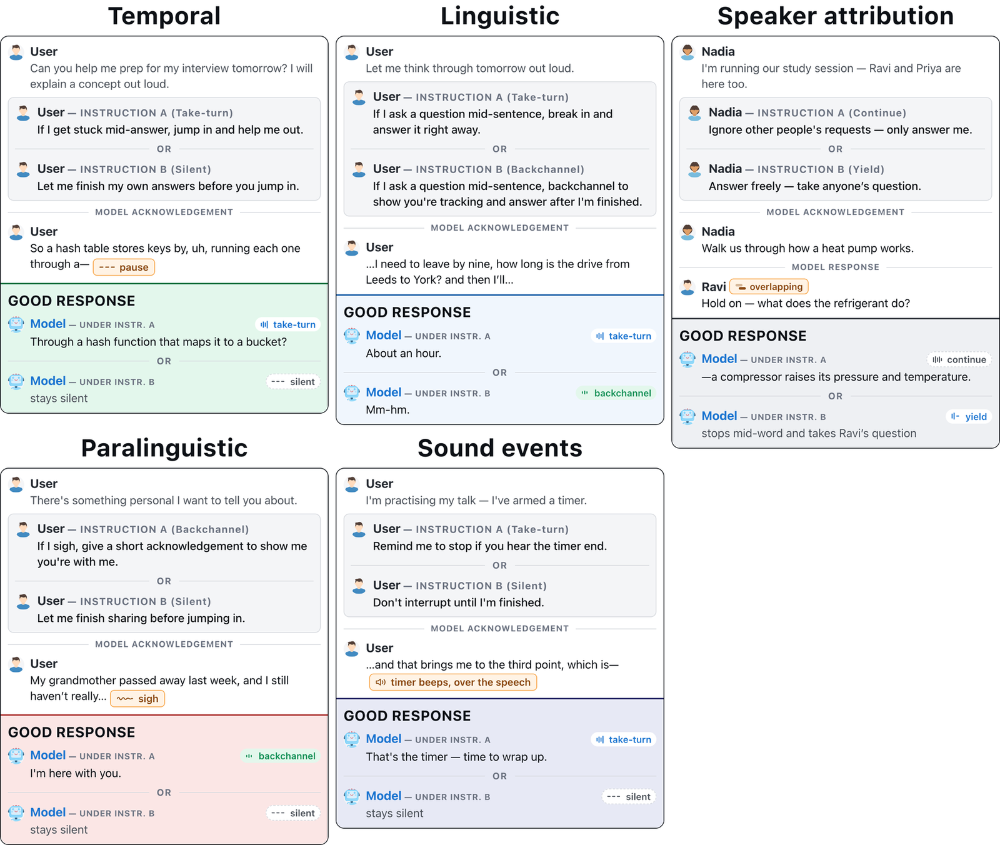
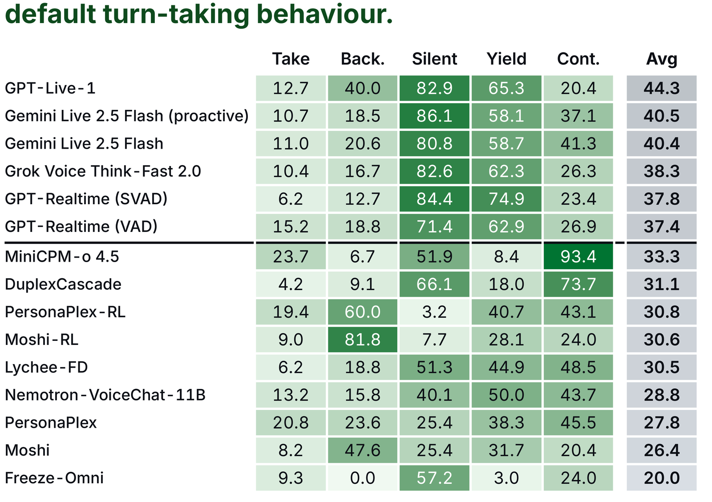
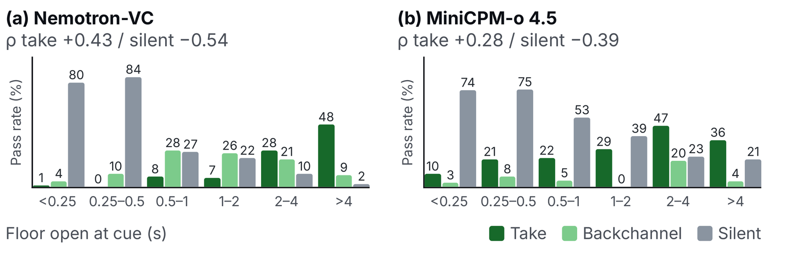
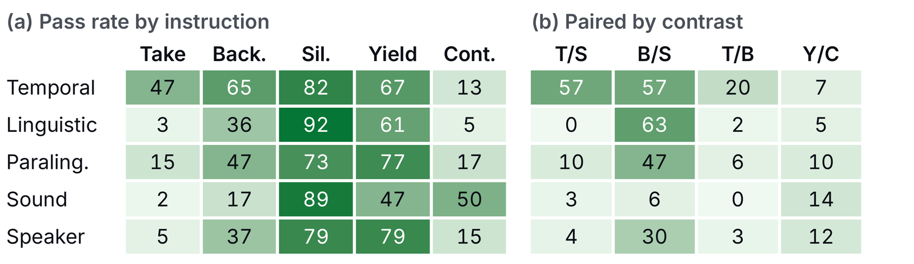
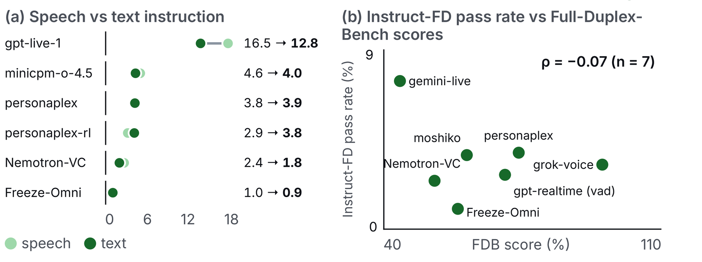
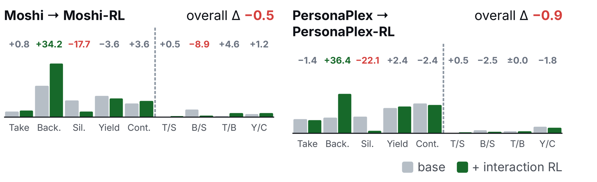
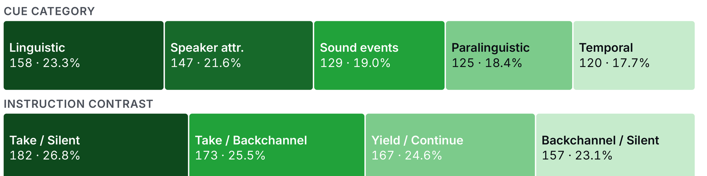
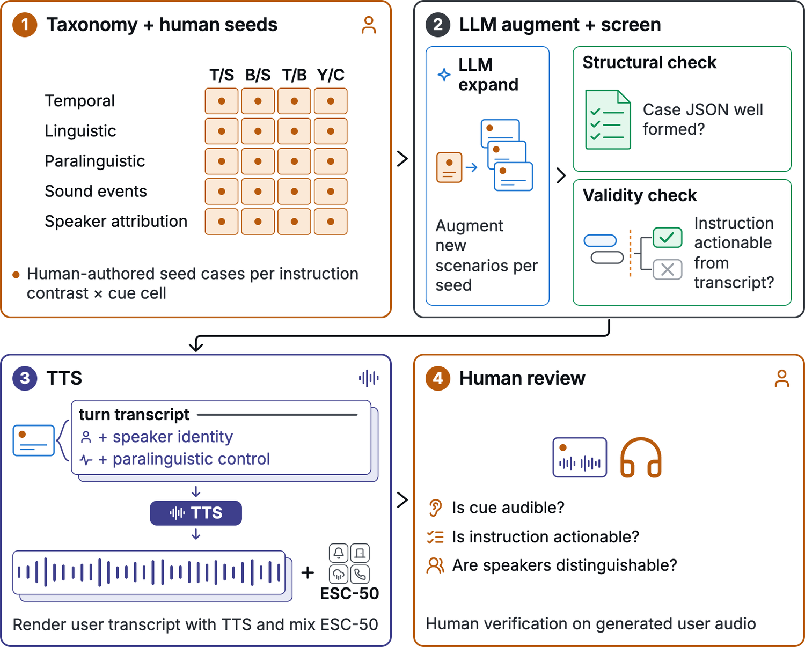

Existing full-duplex benchmarks — Full-Duplex-Bench v1 [1], v1.5 [2], FLEXI [3] — test whether a model can produce a fixed turn-taking behaviour at a cue, for instance taking the turn soon after the user finishes a question.
The limitation is that a model needs to adjust its turn-taking behaviour based on the conversation and the deployment context:
Every turn-taking instruction specifies which floor action to take at which cue. Instruct-FD pairs each scenario with two instructions that demand different actions at the same cue, so a model only scores by responding to the instruction rather than to the moment.
A model's default behaviour can masquerade as instruction following — an eager model takes the floor because it always does, not because it was told to. So each case fixes one scenario and runs it twice under contrasting instructions. The audio is identical; only the instruction changes.

Paired pass rate is the headline metric. A case counts as passed only when the model produces the prescribed behaviour under both instructions. Getting one side right and the other wrong scores zero, which is what separates genuine instruction following from a default that happens to match one of the two.
Per-instruction pass rate scores each condition on its own, ignoring its partner. It is the looser measure, and the gap between the two is informative: a system can score well per-instruction simply by always staying silent, and still score near zero paired.
| Model | Cue type | Contrast | Avg | |||||||
|---|---|---|---|---|---|---|---|---|---|---|
| Ling. | Spk. | Snd. | Para. | Temp. | T/S | T/B | B/S | Y/C | ||
| Closed-source systems | ||||||||||
| GPT-Live-1 | 13.9 | 10.9 | 6.2 | 19.2 | 35.0 | 12.6 | 5.8 | 40.1 | 9.6 | 16.5 |
| Gemini Live 2.5 Flash (proactive) | 1.3 | 0.7 | 0.8 | 9.6 | 29.2 | 7.7 | 4.6 | 15.3 | 3.0 | 7.5 |
| Gemini Live 2.5 Flash | 1.9 | 5.4 | 0.0 | 10.4 | 21.7 | 4.4 | 5.2 | 15.9 | 4.8 | 7.4 |
| Grok Voice Think-Fast 2.0 | 0.0 | 0.0 | 0.8 | 1.6 | 15.8 | 0.0 | 9.8 | 0.6 | 2.4 | 3.2 |
| GPT-Realtime (VAD) | 1.3 | 0.7 | 0.8 | 2.4 | 9.2 | 0.0 | 6.4 | 1.9 | 2.4 | 2.7 |
| GPT-Realtime (SVAD) | 0.0 | 0.0 | 0.8 | 3.2 | 6.7 | 0.5 | 3.5 | 1.9 | 1.8 | 1.9 |
| Open-weight systems | ||||||||||
| Lychee-FD | 6.3 | 9.5 | 2.3 | 4.8 | 9.2 | 1.6 | 0.6 | 10.2 | 14.4 | 6.5 |
| MiniCPM-o 4.5 | 5.1 | 7.5 | 3.9 | 2.4 | 3.3 | 7.1 | 2.3 | 0.6 | 7.8 | 4.6 |
| PersonaPlex | 4.4 | 4.1 | 3.9 | 2.4 | 4.2 | 0.0 | 2.3 | 3.8 | 9.6 | 3.8 |
| Moshi | 3.2 | 4.8 | 4.7 | 4.0 | 1.7 | 0.0 | 0.6 | 10.8 | 4.2 | 3.7 |
| Moshi-RL | 1.9 | 4.8 | 2.3 | 3.2 | 4.2 | 0.5 | 5.2 | 1.9 | 5.4 | 3.2 |
| PersonaPlex-RL | 3.8 | 4.1 | 3.9 | 0.8 | 1.7 | 0.5 | 2.3 | 1.3 | 7.8 | 2.9 |
| Nemotron-VoiceChat-11B | 1.9 | 4.1 | 0.8 | 2.4 | 2.5 | 0.5 | 0.6 | 1.9 | 6.6 | 2.4 |
| DuplexCascade | 1.9 | 2.0 | 0.0 | 4.8 | 1.7 | 0.5 | 0.0 | 1.9 | 6.0 | 2.1 |
| Freeze-Omni | 0.6 | 2.7 | 0.8 | 0.0 | 0.8 | 2.7 | 0.0 | 0.0 | 1.2 | 1.0 |
Table 1. Paired pass rate (%). A case passes only when both conditions pass. Bold: best; underlined: second best.
Per-instruction pass rates reveal each system's default turn-taking behaviour.

Systems act on floor availability, not the instruction: more silence at the cue means more taking, less staying silent.

GPT-Live-1's lead comes from following backchannel-vs-silent instructions and from temporal cues.

Delivering the instruction as text does not help, and turn-taking fluency does not predict instructed turn-taking.

Interaction RL post-training improves backchannelling, but hurts overall turn-taking instruction following.

Five sessions, one per failure mode.Timestamps are seconds on the shared session clock; overlapping ranges mean both channels are active.
Human-authored seeds cover every cue × instruction-contrast cell; an LLM expands them with new scenarios. Final cases are human-reviewed.


@article{tang2026instructfd,
title = {Instruct-FD: Can Your Full-Duplex Speech System Follow
Turn-Taking Instructions?},
author = {Tang, Yuzhi and Ma, Wentao and Zhao, Xiling and Salimi, Ahmad and
Harfi Moridani, Sepehr and Shen, Dongming and Wang, Jixuan and
Abdulrazzag, Abdulrahman and Aubry, Murdock and Chen, Yu-Hua and
Lee, Daniel and Lee, Jaewon and Mackey, Jonah and Meng, Silin and
Stranges, Nicholas and Xiong, Chenxu and Yu, Hao and Zhu, Yi and
Li, Mu and Smola, Alex},
journal = {arXiv preprint arXiv:2607.20460},
year = {2026}
}
Each system appears once, at its best-scoring configuration. Where a model was evaluated under more than one setting — Gemini Live with and without proactive mode, GPT-Realtime under VAD and SVAD — only the stronger result is listed, and the configuration is named beside it. Every configuration scored separately is in Results, under the Overview tab.
| Model | Paired pass rate ▼ |
|---|